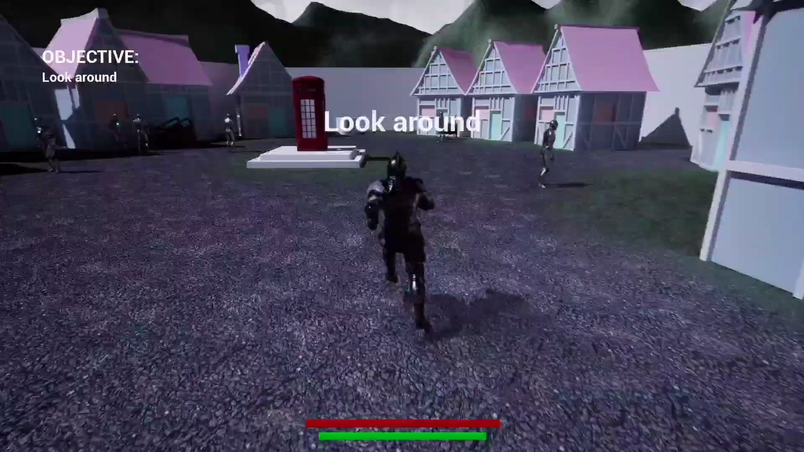
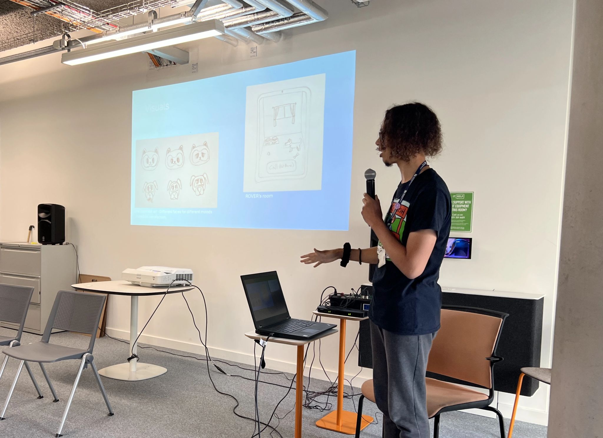
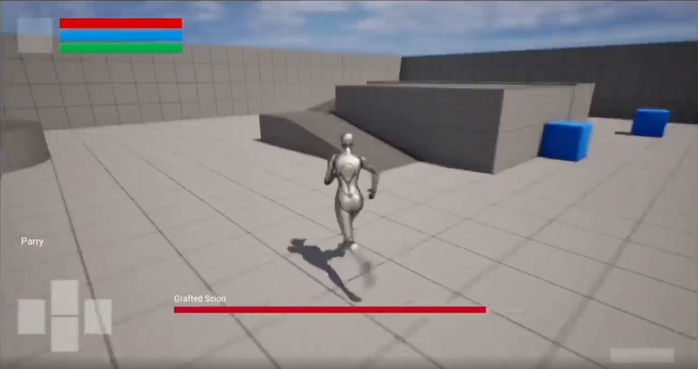
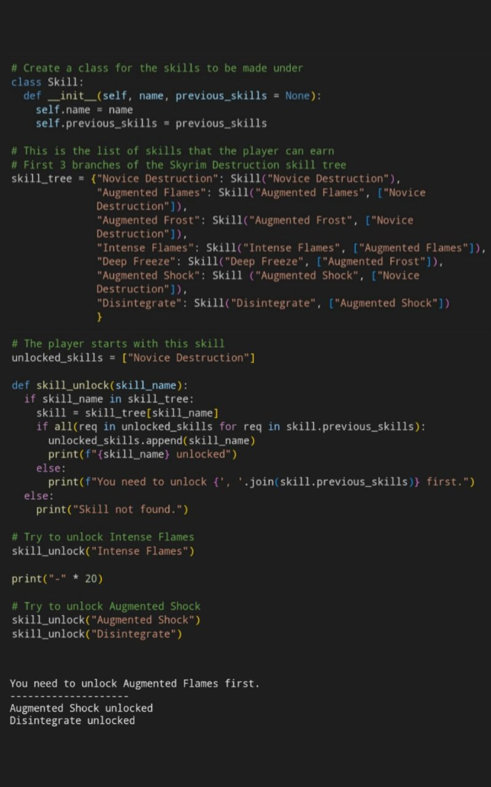

My Games
DrumFlow
DrumFlow was a game that I developed for an 80-hour placement. Implemented a responsive scoring system, adaptive audio, and intuitive controls to encourage player feedback and immersion.
KARD
A game about a robot that has to collect cargo before the enemy robot destroys it. The game has two modes, singleplayer as well as multiplayer which uses a split screen view, each player having their own score.
Spotlight
You control a spotlight that reveals hidden items, secrets and collectables. The player must utilise this feature to reveal platforms in order to progress throughout the game.
Dichromatic
The game uses 3D glasses with each lens showing objects of a specific color, highlighting the "Two Points of View" theme. Using two colors from a limited palette, it showcases different perspectives through each lens.

The Crimson Call
A third-person adventure in Unreal Engine 5 (Blueprints) focused on narrative and environmental storytelling. Players control a knight who discovers a mysterious wand, unlocking interactive elements and encouraging exploration.

Other Projects

ROVER
The hackathon was based around helping people that suffer from Dementia. I came up with an idea for a digital companion that could encourage daily activities, reinforce positive habits, and offer comfort to the user.
Dalek
A hard-surface model that I created for the 1st semester of University. I had lots of fun modelling it and was able to overcome many challenges that I faced.

Recreating the Elden Ring UI
For an activity in university, we had to choose one game and recreate the UI for that game but using Unreal Engine blueprints. I chose Elden Ring and added the mechanic to lock-on to nearby enemies.

Skyrim Skill Tree
During my first year of university, we briefly studied tree data structures. I decided to recreate Skyrim's Destruction skill tree in Python. I recreated the first 3 branches of the skill tree using classes, dictionaries, and functions that checked if the skill can be unlocked.